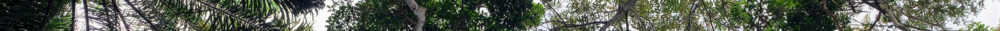
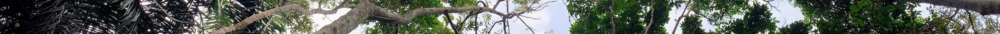

Publications

See below for a list of all my publications. Also check out my Google scholar profile.
Peer-reviewed papers
[*corresponding author][+senior author]
2025
- Gleiser, G., Alcántara, J. M., Bascompte, J., Garrido, J. L., Montesinos‐Navarro, A.,Paterno, G.B., Valiente‐Banuet, A., & Verdú, M. (2025). The Phylogenetic Architecture of Recruitment Networks. Global Ecology and Biogeography, 34(1), e13944. [doi]
2024
- Alcántara, J. M., Verdú, M., Garrido, J. L., Montesinos‐Navarro, A., Aizen, M. A., Alifriqui, M., Allen, D., Al‐Namazi, A. A., Armas, C., Bastida, J. M., Bellido, T., Paterno, G. B., Briceño, H., Camargo De Oliveira, R. A., Campoy, J. G., Chaieb, G., Chu, C., Constantinou, E., Delalandre, L., …Paterno, G.B.… Zamora, R. (2024). Key concepts and a world‐wide look at plant recruitment networks. Biological Reviews, brv.13177. [doi]
- Paterno, G.B.*+, Brambach, F., Guerrero-Ramírez, N., Zemp, D. C., Cantillo, A. F., Camarretta, N., Moura, C. C. M., Gailing, O., Ballauff, J., Polle, A., Schlund, M., Erasmi, S., Iddris, N. A., Khokthong, W., Sundawati, L., Irawan, B., Hölscher, D., & Kreft, H. (2024). Diverse and larger tree islands promote native tree diversity in oil palm landscapes. Science, 386(6723), 795–802. [doi]
- Kikuchi, T., Seidel, D., Ehbrecht, M., Zemp, D. C., Brambach, F., Irawan, B., Sundawati, L., Hölscher, D., Kreft, H., & Paterno, G.B.+ (2024). Combining planting trees and natural regeneration promotes long-term structural complexity in oil palm landscapes. Forest Ecology and Management, 569, 122182. [doi].
- Luo, S., Schmid, B., Hector, A., Scherer‐Lorenzen, M., Verheyen, K., Barsoum, N., Bauhus, J., Beyer, F., Bruelheide, H., Ferlian, O., Godbold, D., Hall, J. S., Hajek, P., Huang, Y., Hölscher, D., Kreft, H., Liu, X., Messier, C., Nock, C., … Paterno, G.B. … Eisenhauer, N. (2024). Mycorrhizal associations modify tree diversity−productivity relationships across experimental tree plantations. New Phytologist, 243(3), 1205–1219. [doi]
- Wenzel, A., Westphal, C., Ballauff, J., Berkelmann, D., Brambach, F., Buchori, D., Camarretta, N., Corre, M. D., Daniel, R., Darras, K., Erasmi, S., Formaglio, G., Hölscher, D., Iddris, N. A.-A., Irawan, B., Knohl, A., Kotowska, M. M., Krashevska, V., Kreft, H., …Paterno, G.B.… Grass, I. (2024). Balancing economic and ecological functions in smallholder and industrial oil palm plantations. Proceedings of the National Academy of Sciences, 121(17), e2307220121. [doi].
- Blondeel, H., Guillemot, J., Martin‐StPaul, N., Druel,… Paterno, G.B. … Baeten, L. (2024). Tree diversity reduces variability in sapling survival under drought. Journal of Ecology, 1365-2745.14294. [doi]
- Zheng, L., Barry, K.E., Guerrero-Ramírez,… Paterno, G.B., … C., Tilman, D., Yan, E., Hautier, Y., 2024. Effects of plant diversity on productivity strengthen over time due to trait-dependent shifts in species overyielding. Nat Commun 15, 2078. [doi]
- Depauw, L., Lombaerde, E. D., Dhiedt, …Paterno, G.B.,… Baeten, L. (2023). Enhancing tree performance through species mixing: A 23-year TreeDivNet review revealing research gaps and practical insights. Current Forestry Reports. [ doi]
2023
- Zemp DC, Guerrero-Ramirez N, Brambach F,…Paterno, G.B.,… Kreft, H. (2023) Tree islands enhance biodiversity and functioning in oil palm landscapes. Nature 1–6. [ doi]
- Verdú M, Garrido JL, Alcántara JM,… Paterno, G.B.… et al (2023) RecruitNet: A global database of plant recruitment networks. Ecology 104:e3923. [ doi]
2022
- Jonas O Wolff, Kaja Wierucka, Paterno, G.B., Jonathan A Coddington, Gustavo Hormiga, Michael B J Kelly, Marie E Herberstein, Martín J Ramírez, Stabilized morphological evolution of spiders despite mosaic changes in foraging ecology, Systematic Biology (2022). [ doi].
- Ladouceur, E., Shackelford, N., Bouazza, K., Brudvig, L., Bucharova, A., Conradi, T., Erickson, T. E., Garbowski, M., Garvy, K., Harpole, W. S., Jones, H. P., Knight, T., Nsikani, M. M., Paterno, G.B., Suding, K., Temperton, V. M., Török, P., Winkler, D. E., & Chase, J. M. (2022). Knowledge sharing for shared success in the decade on ecosystem restoration. Ecological Solutions and Evidence, 3, e12117. [ doi / pdf / data].
2021
- Franco, J.R.A., Paterno, G.B.. and Ganade, G. (2022), The influence of herbaceous vegetation on the colonization of native and invasive trees: consequences for semiarid forest restoration. Restoration Ecology (2021). [ doi]
- Fonseca, C. R., Paterno, G.B., Guadagnin, D. L., Venticinque, E. M., Overbeck, G. E., Ganade, G., Metzger, J. P., Kollmann, J., Sauer, J., Cardoso, M. Z., Lopes, P. F. M., Oliveira, R. S., Pillar, V. D., & Weisser, W. W. (2021). Conservation biology: four decades of problem- and solution-based research. Perspectives in Ecology and Conservation, 19(2), 121–130. [ doi/ pdf]
2020
- Cássia-Silva, C., Freitas, C. G., Lemes, L. P., Paterno, G.B., Dias, P. A., Bacon, C. D., & Collevatti, R. G. (2020). Higher evolutionary rates in life-history traits in insular than in mainland palms. Scientific Reports, 10(1), 1–10. [ doi]
- David L. Röhr, Felipe Camurugi, Paterno, G.B., Marcelo Gehara, Flora A. Juncá, Guilherme F. R. Álvares, Reuber A. Brandão, and Adrian A. Garda. Variability in anuran advertisement call: A multi-level study with 15 species of monkey tree frogs (Anura: Phyllomedusidae). Canadian Journal of Zoology, 2020. [ doi/ data/ osf].
2019
- Wolff, J. O., Paterno, G.B., Liprandi, D., Ramírez, M. J., Bosia, F., Meijden, A., Michalik, P., Smith, H. M., Jones, B. R., Ravelo, A. M., Pugno, N., & Herberstein, M. E. (2019). Evolution of aerial spider webs coincided with repeated structural optimization of silk anchorages. Evolution, 73(10), 2122–2134. (Cover article) [ doi/ data].
2018
2016
- Paterno, G.B., Siqueira Filho, J. A., & Ganade, G. (2016). Species-specific facilitation, ontogenetic shifts and consequences for plant community succession. Journal of Vegetation Science, 27(3), 606–615. [ doi].
- Kollmann, J., S. T. Meyer, R. Bateman, T. Conradi, M. M. Gossner, M. de Souza Mendonça, G. W. Fernandes, J.-M. Hermann, C. Koch, S. C. Müller, Y. Oki, G. E. Overbeck, Paterno, G.B., M. F. Rosenfield, T. S. P. Toma, and W. W. Weisser. 2016. Integrating ecosystem functions into restoration ecology-recent advances and future directions. Restoration Ecology 24:722–730. [ doi].
2015
- Garla, R. C., R. H. a. Freitas, J. F. Calado,Paterno, G.B., and A. R. Carvalho. 2015. Public awareness of the economic potential and threats to sharks of a tropical oceanic archipelago in the western South Atlantic. Marine Policy 60:128–133. [ doi].
2010
- Loiola, M. I. B., Paterno, G.B. and J. Apolinar. 2010. Leguminosae and Its Potencial of Use in the Rural Communities of São Miguel Do Gostoso – Rn. Revista Caatinga 23:59–70. [ doi].
Books
- Da Silva, F.R., Gonçalves-Souza, T., Paterno, G.B., Provete, D.B., & Vancine, M. H. (2022). Análises Ecológicas no R. [ link]
Pre-prints
- Cayetano, D. T., Zemp, D. C., Buchori, D., Fiedler, S., Grass, I., Hölscher, D., Irawan, B., Korol, Y., Khokthong, W., Paterno, G.B., Polle, A., Potapov, A., Sundawati, L., Tscharntke, T., Westphal, C., Weigelt, P., Wiegand, K., Kreft, H., & Guerrero-Ramírez, N. R. (2023). Scale-dependent landscape-biodiversity relationships shape multi-taxa diversity in an oil palm monoculture under restoration [Preprint]. https://doi.org/10.1101/2023.09.08.556058
- Paterno, G.B., Brambach, F., Guerrero-Ramírez, N., Zemp, D. C., Cantillo, A. F., Camarretta, N., Moura, C. C. M., Gailing, O., Ballauff, J., Polle, A., Schlund, M., Erasmi, S., Iddris, N. A.-A., Khokthong, W., Sundawati, L., Irawan, B., Hölscher, D., & Kreft, H. (2023). Planting diversity begets multifaceted tree diversity in oil palm landscapes [Preprint]. https://doi.org/10.1101/2023.12.04.566521
